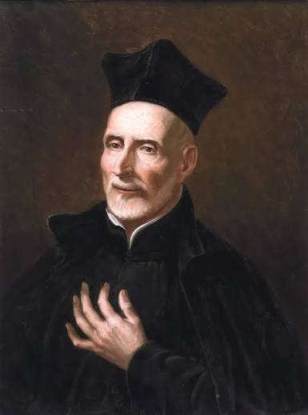

Información
San José de Calasanz (1557-1648) fue un sacerdote, pedagogo y santo español. Es reconocido por impulsar la educación gratuita para los niños, especialmente para aquellos que no tenían recursos. Nació en Peralta de la Sal, Aragón, y estudió Teología y Derecho Canónico.
En 1583 fue ordenado sacerdote y, después de ocupar distintos cargos religiosos en España, viajó a Roma en 1592. Allí conoció la situación de muchos niños pobres que no podían ir a la escuela. Por eso decidió dedicar su vida a enseñarles.
En 1597 abrió una escuela gratuita en la parroquia de Santa Dorotea. En ella los niños podían aprender a leer, escribir y hacer operaciones matemáticas. Su objetivo era que la educación no fuera un privilegio de unos pocos, sino una oportunidad para todos.
Su legado educativo
Calasanz defendía que todos los niños debían tener la posibilidad de estudiar, sin importar su situación económica. También buscaba que la educación combinara los conocimientos con los valores y la formación personal.
Su lema fue «Piedad y Letras», que representa la unión entre la formación religiosa y el aprendizaje. Su trabajo dio origen a las Escuelas Pías, una comunidad dedicada a la educación.
Fechas importantes
- 1557: Nace en Peralta de la Sal, Aragón, España.
- 1583: Es ordenado sacerdote.
- 1592: Viaja a Roma y conoce la realidad de los niños sin acceso a la educación.
- 1597: Abre una escuela gratuita en Roma.
- 1622: Se aprueba oficialmente la Orden de las Escuelas Pías.
- 1648: Fallece en Roma, el 25 de agosto.
- 1748: Es beatificado por la Iglesia católica.
- 1767: Es canonizado por el papa Clemente XIII.